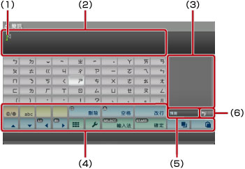
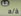
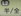
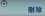
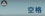
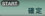
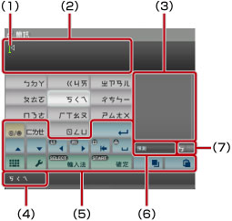
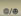
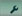

XMB™之基本操作 > 使用鍵盤
使用鍵盤
需要輸入文字時，會自動顯示鍵盤。以下即說明中文鍵盤的使用方法。各語言的鍵盤使用方法，請參閱各語言的用戶指南。

(1) |
游標 |
|---|---|
(2) |
文字輸入欄位 |
(3) |
顯示預測選項 |
(4) |
操作按鍵 |
(5) |
僅於啟動預測模式時顯示 |
(6) |
顯示輸入模式 |
按鍵一覽
顯示之按鍵會因輸入模式或其他狀況而異。
| 輸入記號或表情符號 | |
 / / / |
選擇文字的輸入種類 |
| 移動文字游標 | |
 |
刪除文字游標左邊的字元 |
 |
插入空格 |
| 改行／插入一行 | |
 ／ ／ |
複製／貼上文字 |
 |
更換為迷你小鍵盤 |
 |
顯示選項選單 |
| 更換輸入法 | |
 |
確認未確定的文字／確定輸入並關閉鍵盤 |
輸入文字
使用預測模式，您即可在輸入單字最初的數個拼字後，從起頭為這些拼字的常用單字名單中擷取您想要的單字，此時您需使用方向按鈕以選擇您想要的單字。若您已結束單字的輸入，請選擇以離開鍵盤。
提示
- 無法變換時，需於輸入文字後選擇。
- 通常變換時，若按下L1／R1按鈕，可調整需要變換之文章的段落位置。
- 不使用預測模式時，需進入重新設定。
- 部份輸入模式可能無法使用預測模式。
- 部份輸入模式可能無法輸入表情符號。
- 您輸入文字時使用的語言皆屬主機已支援之系統語言。例如，當系統語言設定為法文時，您可透過鍵盤使用法文輸入文字。選擇
 （設定）＞
（設定）＞ （主機設定）＞［系統語言］，即可更換系統語言。
（主機設定）＞［系統語言］，即可更換系統語言。 - 按下
 按鈕＋L1按鈕，即可刪除文字輸入欄位內的所有文字。
按鈕＋L1按鈕，即可刪除文字輸入欄位內的所有文字。
使用外接式鍵盤
使用另售的USB鍵盤或Bluetooth®（藍芽）鍵盤，亦能輸入文字。顯示文字的輸入畫面時，只要按下已連接之鍵盤的任何一個按鈕，即能更換輸入畫面。
提示
- 關於Bluetooth®（藍芽）鍵盤連接方法的詳細說明，請參閱（設定）＞
 （設定周邊機器）＞［管理Bluetooth®（藍芽）裝置］。
（設定周邊機器）＞［管理Bluetooth®（藍芽）裝置］。 - 使用外接式鍵盤時，無法使用預測模式。
- 按下Alt按鍵＋Enter按鍵，即可在文字輸入欄位內改行／插入一行。僅於在
 （好友）內撰寫簡訊等，可以改行的情況下有效。
（好友）內撰寫簡訊等，可以改行的情況下有效。 - 按下Shift按鍵＋Backspace按鍵，即可刪除文字輸入欄位內的所有文字。
- 按下Ctrl鍵＋V鍵，即可貼上已複製的文字。貼上的文字為最後複製的文字。
使用迷你小鍵盤
顯示全鍵盤時若選擇，會更換為迷你小鍵盤。使用迷你小鍵盤時，每個按鈕可能代表數個字元。

(1) |
游標 |
|---|---|
(2) |
文字輸入欄位 |
(3) |
顯示預測選項 |
(4) |
顯示可透過選擇之按鍵輸入的文字 |
(5) |
操作按鍵 |
(6) |
僅於啟動預測模式時顯示 |
(7) |
顯示輸入模式 |
 按鈕，都會依序更換輸入文字。例如，使用注音輸入法想輸入［ㄈ］時，需選擇並按下
按鈕，都會依序更換輸入文字。例如，使用注音輸入法想輸入［ㄈ］時，需選擇並按下按鍵一覽
顯示之按鍵會因輸入模式或其他狀況而異。
 |
輸入記號 |
|---|---|
 |
輸入句號、逗號等標點符號／大小寫更換 |
 |
改行／插入一行 |
| 移動文字游標 | |
 |
刪除文字游標左邊的字元 |
 |
插入空格 |
 ／ ／ |
複製／貼上文字 |
 |
更換為全鍵盤 |
 |
顯示選項選單 |
| 更換輸入法 | |
| 確認未確定的文字／確定輸入並關閉鍵盤 |